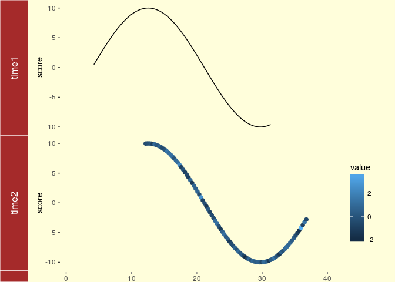
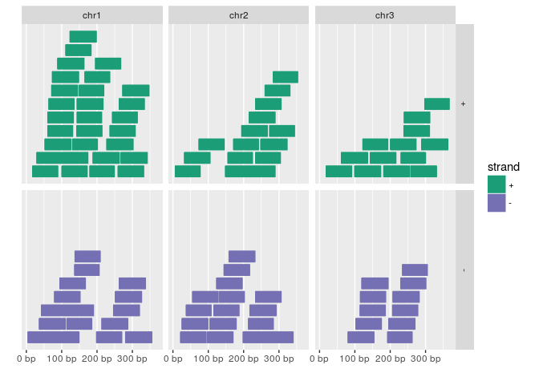
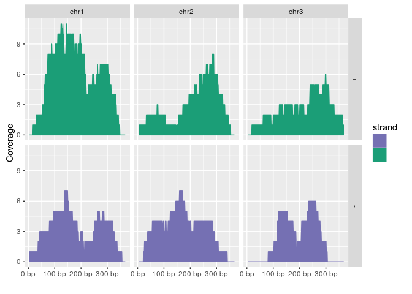
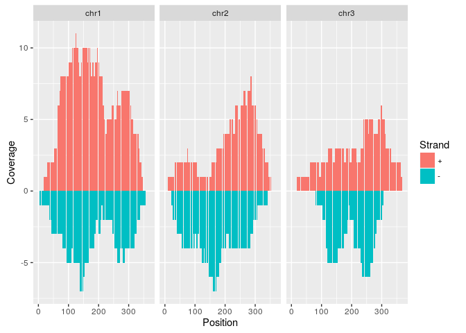
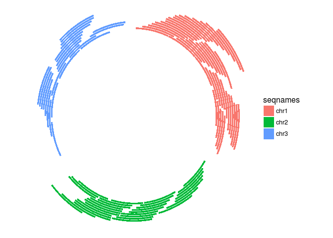

ggbio
- What is
ggbio?- A programmable genome browser environment
- Genome broswer concepts
- A genome browser is a visulalization tool for plotting different types of genomic data in separate tracks along chromosomes.
- The
ggbiopackage (Yin et al., 2012) facilitates plotting of complex genome data objects, such as read alignments (SAM/BAM), genomic context/annotation information (gff/txdb), variant calls (VCF/BCF), and more. To easily compare these data sets, it extends the faceting facility ofggplot2to genome browser-like tracks. - Most of the core object types for handling genomic data with R/Bioconductor are supported:
GRanges,GAlignments,VCF, etc. For more details, see Table 1.1 of theggbiovignette here. ggbio’s convenience plotting function isautoplot. For more customizable plots, one can use the genericggplotfunction.- Apart from the standard
ggplot2plotting components,ggbiodefines serval new components useful for genomic data visualization. A detailed list is given in Table 1.2 of the vignette here. - Useful web sites:
Tracks: aligning plots along chromosomes
library(ggbio)
df1 <- data.frame(time = 1:100, score = sin((1:100)/20)*10)
p1 <- qplot(data = df1, x = time, y = score, geom = "line")
df2 <- data.frame(time = 30:120, score = sin((30:120)/20)*10, value = rnorm(120-30 +1))
p2 <- ggplot(data = df2, aes(x = time, y = score)) + geom_line() + geom_point(size = 2, aes(color = value))
tracks(time1 = p1, time2 = p2) + xlim(1, 40) + theme_tracks_sunset()
Plotting genomic ranges
GRanges objects are essential for storing alignment or annotation ranges in R/Bioconductor. The following creates a sample GRanges object and plots its content.
library(GenomicRanges)
set.seed(1); N <- 100; gr <- GRanges(seqnames = sample(c("chr1", "chr2", "chr3"), size = N, replace = TRUE), IRanges(start = sample(1:300, size = N, replace = TRUE), width = sample(70:75, size = N,replace = TRUE)), strand = sample(c("+", "-"), size = N, replace = TRUE), value = rnorm(N, 10, 3), score = rnorm(N, 100, 30), sample = sample(c("Normal", "Tumor"), size = N, replace = TRUE), pair = sample(letters, size = N, replace = TRUE))
autoplot(gr, aes(color = strand, fill = strand), facets = strand ~ seqnames)
Plotting coverage
autoplot(gr, aes(color = strand, fill = strand), facets = strand ~ seqnames, stat = "coverage")## Scale for 'x' is already present. Adding another scale for 'x', which will replace the existing
## scale.
Mirrored coverage
pos <- sapply(coverage(gr[strand(gr)=="+"]), as.numeric)
pos <- data.frame(Chr=rep(names(pos), sapply(pos, length)), Strand=rep("+", length(unlist(pos))), Position=unlist(sapply(pos, function(x) 1:length(x))), Coverage=as.numeric(unlist(pos)))
neg <- sapply(coverage(gr[strand(gr)=="-"]), as.numeric)
neg <- data.frame(Chr=rep(names(neg), sapply(neg, length)), Strand=rep("-", length(unlist(neg))), Position=unlist(sapply(neg, function(x) 1:length(x))), Coverage=-as.numeric(unlist(neg)))
covdf <- rbind(pos, neg)
p <- ggplot(covdf, aes(Position, Coverage, fill=Strand)) +
geom_bar(stat="identity", position="identity") + facet_wrap(~Chr)
p
Circular genome plots
ggplot(gr) + layout_circle(aes(fill = seqnames), geom = "rect")
More complex circular example
seqlengths(gr) <- c(400, 500, 700)
values(gr)$to.gr <- gr[sample(1:length(gr), size = length(gr))]
idx <- sample(1:length(gr), size = 50)
gr <- gr[idx]
ggplot() + layout_circle(gr, geom = "ideo", fill = "gray70", radius = 7, trackWidth = 3) +
layout_circle(gr, geom = "bar", radius = 10, trackWidth = 4,
aes(fill = score, y = score)) +
layout_circle(gr, geom = "point", color = "red", radius = 14,
trackWidth = 3, grid = TRUE, aes(y = score)) +
layout_circle(gr, geom = "link", linked.to = "to.gr", radius = 6, trackWidth = 1)Alignments and variants
To make the following example work, please download and unpack this data archive containing GFF, BAM and VCF sample files.
library(rtracklayer); library(GenomicFeatures); library(Rsamtools); library(GenomicAlignments); library(VariantAnnotation)
ga <- readGAlignments("./data/SRR064167.fastq.bam", use.names=TRUE, param=ScanBamParam(which=GRanges("Chr5", IRanges(4000, 8000))))
p1 <- autoplot(ga, geom = "rect")
p2 <- autoplot(ga, geom = "line", stat = "coverage")
vcf <- readVcf(file="data/varianttools_gnsap.vcf", genome="ATH1")
p3 <- autoplot(vcf[seqnames(vcf)=="Chr5"], type = "fixed") + xlim(4000, 8000) + theme(legend.position = "none", axis.text.y = element_blank(), axis.ticks.y=element_blank())
txdb <- makeTxDbFromGFF(file="./data/TAIR10_GFF3_trunc.gff", format="gff3")
p4 <- autoplot(txdb, which=GRanges("Chr5", IRanges(4000, 8000)), names.expr = "gene_id")
tracks(Reads=p1, Coverage=p2, Variant=p3, Transcripts=p4, heights = c(0.3, 0.2, 0.1, 0.35)) + ylab("")
Additional examples
See autoplot demo here
Additional genome graphics
GvizRCircos(Zhang et al., 2013)Genome GraphsgenoPlotR
Genome Browser: IGV
View genome data in IGV
- Download and open IGV
- Select in menu in top left corner A. thaliana (TAIR10)
- Upload the following indexed/sorted Bam files with
File -> Load from URL...
http://faculty.ucr.edu/~tgirke/HTML_Presentations/Manuals/Workshop_Dec_6_10_2012/Rrnaseq/results/SRR064154.fastq.bam
http://faculty.ucr.edu/~tgirke/HTML_Presentations/Manuals/Workshop_Dec_6_10_2012/Rrnaseq/results/SRR064155.fastq.bam
http://faculty.ucr.edu/~tgirke/HTML_Presentations/Manuals/Workshop_Dec_6_10_2012/Rrnaseq/results/SRR064166.fastq.bam
http://faculty.ucr.edu/~tgirke/HTML_Presentations/Manuals/Workshop_Dec_6_10_2012/Rrnaseq/results/SRR064167.fastq.bam- To view area of interest, enter its coordinates
Chr1:49,457-51,457in position menu on top.

Create symbolic links
For viewing BAM files in IGV as part of systemPipeR workflows.
systemPipeR: utilities for building NGS analysis pipelines
library("systemPipeR")
symLink2bam(sysargs=args, htmldir=c("~/.html/", "somedir/"),
urlbase="http://myserver.edu/~username/",
urlfile="IGVurl.txt")Controlling IGV from R
Note this may not work on all systems.
library(SRAdb)
startIGV("lm")
sock <- IGVsocket()
session <- IGVsession(files=myurls,
sessionFile="session.xml",
genome="A. thaliana (TAIR10)")
IGVload(sock, session)
IGVgoto(sock, 'Chr1:45296-47019')